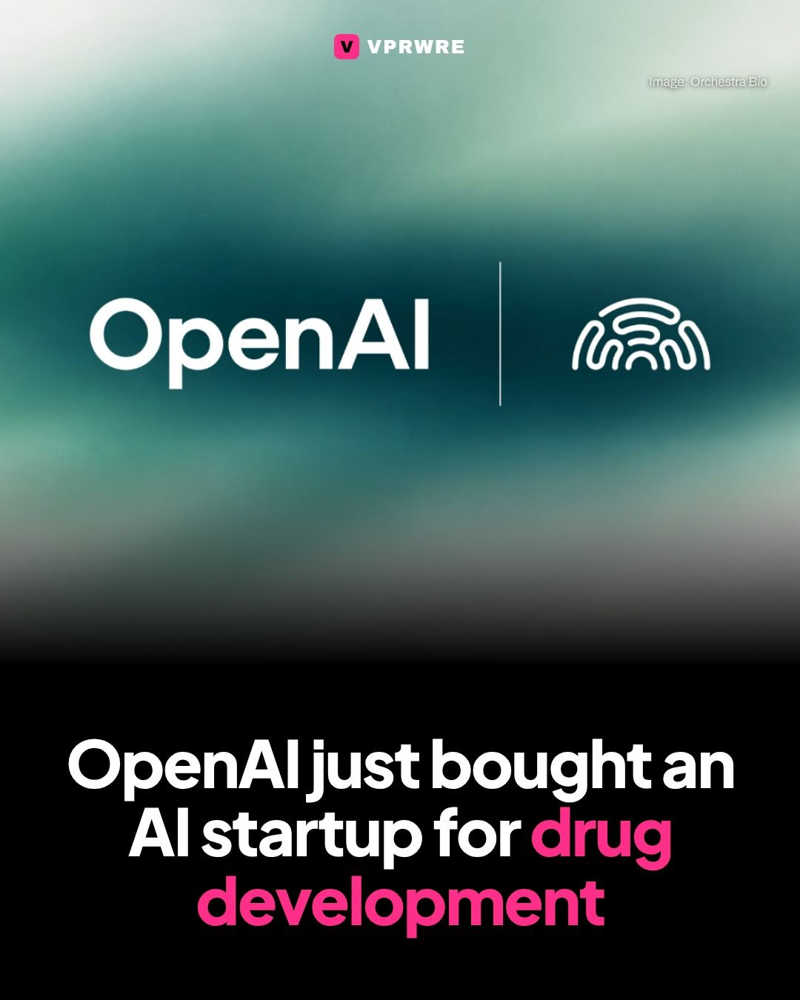
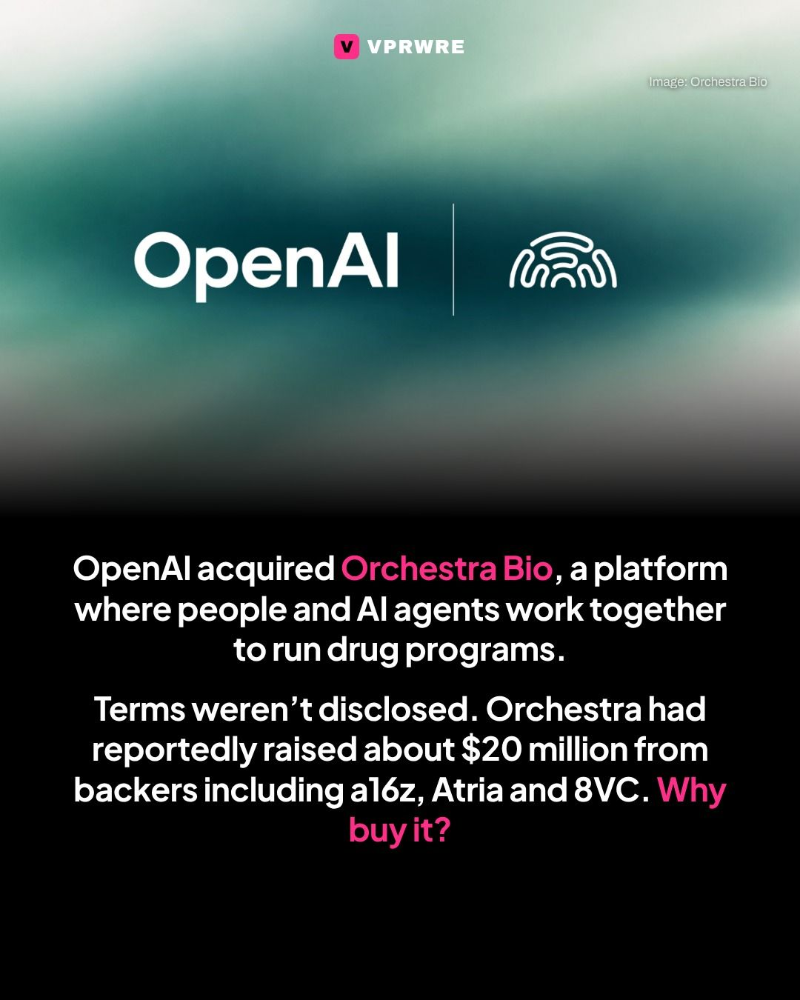
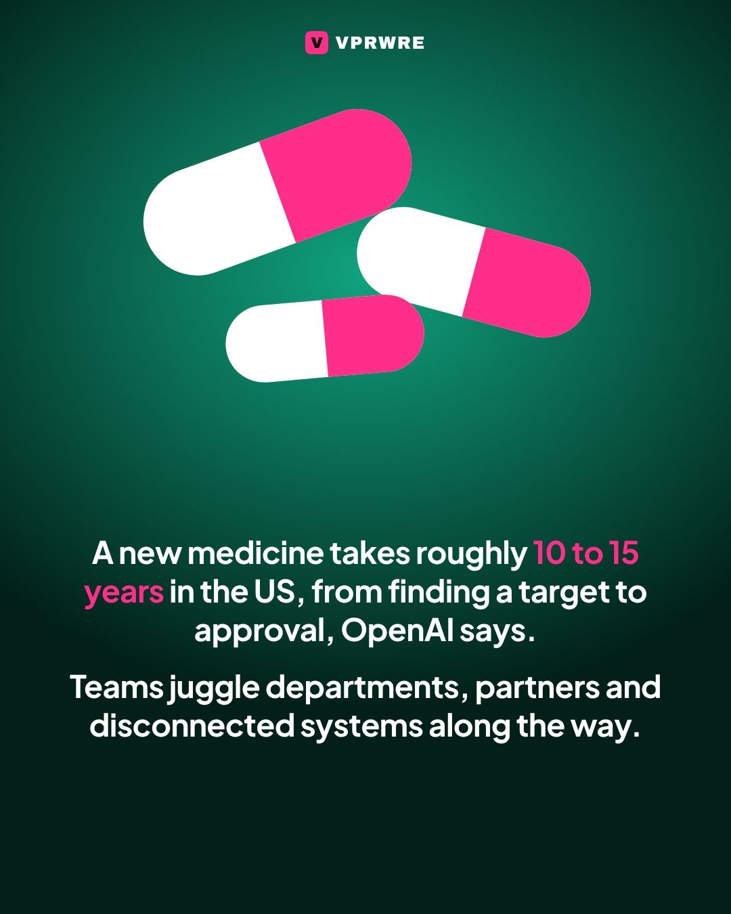
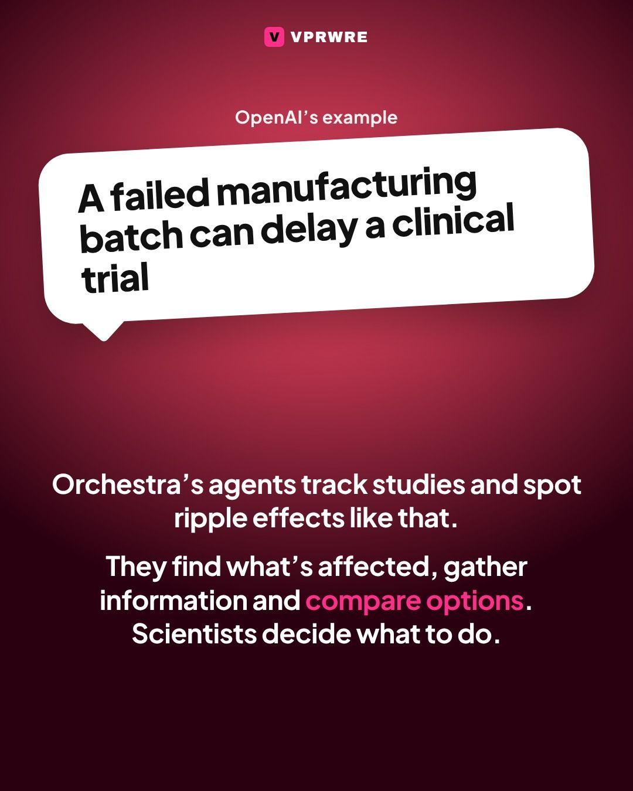
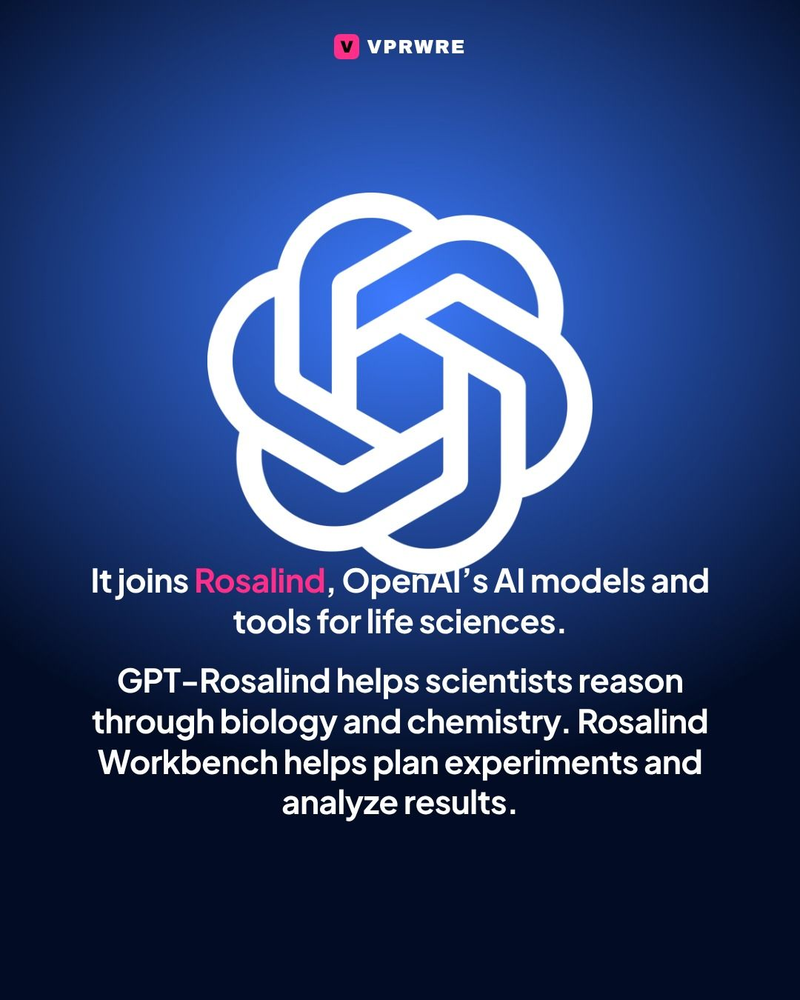
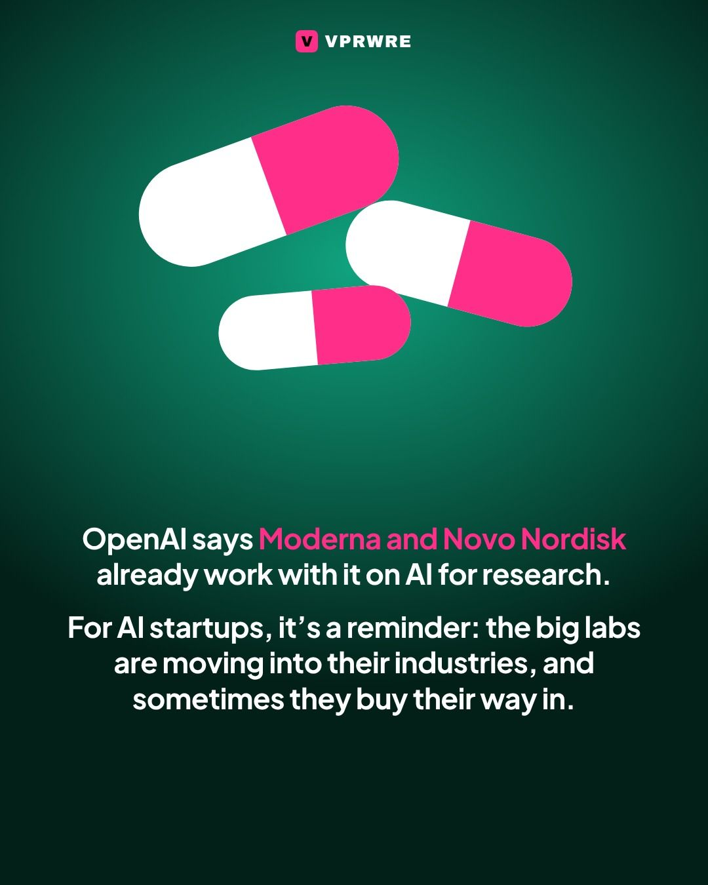

Deals
OpenAI just bought an AI startup for drug development.
OpenAI just bought an AI startup for drug development.
OpenAI acquired Orchestra Bio, a platform where biopharma teams and AI agents work together to run drug programs. Terms weren’t disclosed. The four-year-old startup had reportedly raised about $20 million from backers including Andreessen Horowitz, Atria and 8VC.
Scientists and program leaders hand Orchestra’s agents the monitoring and tracking of studies. When something goes wrong, like a failed manufacturing batch that could delay a clinical trial, the agents find what’s affected, gather information and compare ways to respond, and people decide what to do. OpenAI says developing a new medicine takes roughly 10 to 15 years on average in the US, from target discovery to approval.
Orchestra’s team and technology join Rosalind, OpenAI’s AI models and tools for life sciences research, including GPT-Rosalind and Rosalind Workbench. OpenAI names Moderna and Novo Nordisk among the companies it works with.
Image: Orchestra Bio
The carousel
7 slides · Open on Instagram







Disclosure: VPRWRE drafts with Claude, Anthropic’s AI.